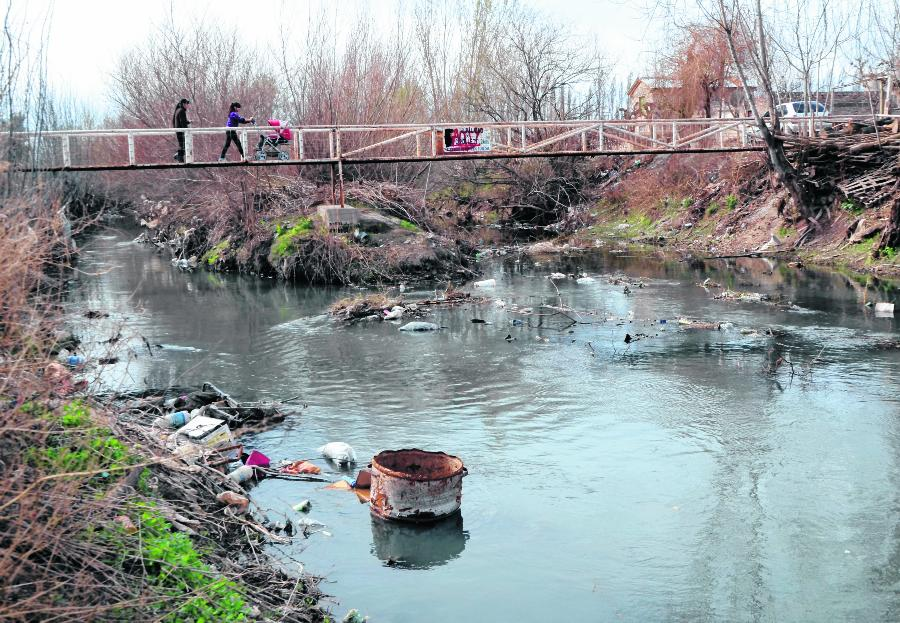

La contaminación es un problema que nos afecta a todos. ¿Alguna vez pensaste cómo afecta la contaminación al lugar donde vivimos? La contaminación está presente en nuestro ambiente y puede afectar el agua, el aire y el suelo.

Causas de la contaminación
Una de las principales causas es la acumulación de residuos. Cuando la basura se arroja en lugares incorrectos, puede contaminar el suelo y el agua. También la contaminación del aire puede producirse por el humo de los vehículos, las industrias y la quema de residuos.
¿Qué podemos hacer?
Para cuidar nuestro ambiente podemos separar los residuos, evitar tirar basura en la calle, reutilizar materiales y reducir el uso innecesario de productos descartables. También es importante cuidar el agua y los espacios naturales de nuestra comunidad.
La educación es clave
La educación y la participación de todas las personas son fundamentales para generar hábitos más responsables. Si cada uno aporta desde su lugar, podemos lograr cambios positivos en nuestro entorno.
La contaminación es un problema que nos involucra a todos. Cuidar el ambiente no significa hacer grandes cosas, sino comenzar con pequeñas acciones todos los días. ¡Cuidar el planeta es cuidar nuestro futuro!